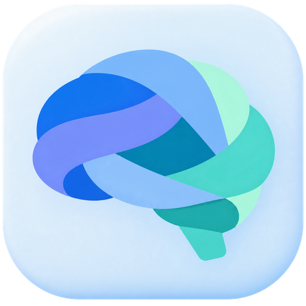
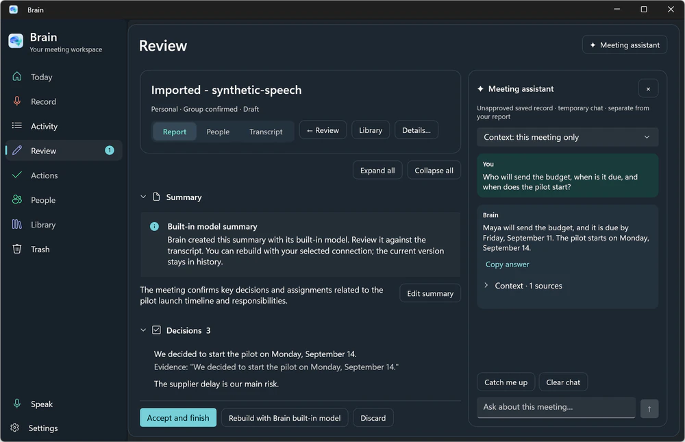
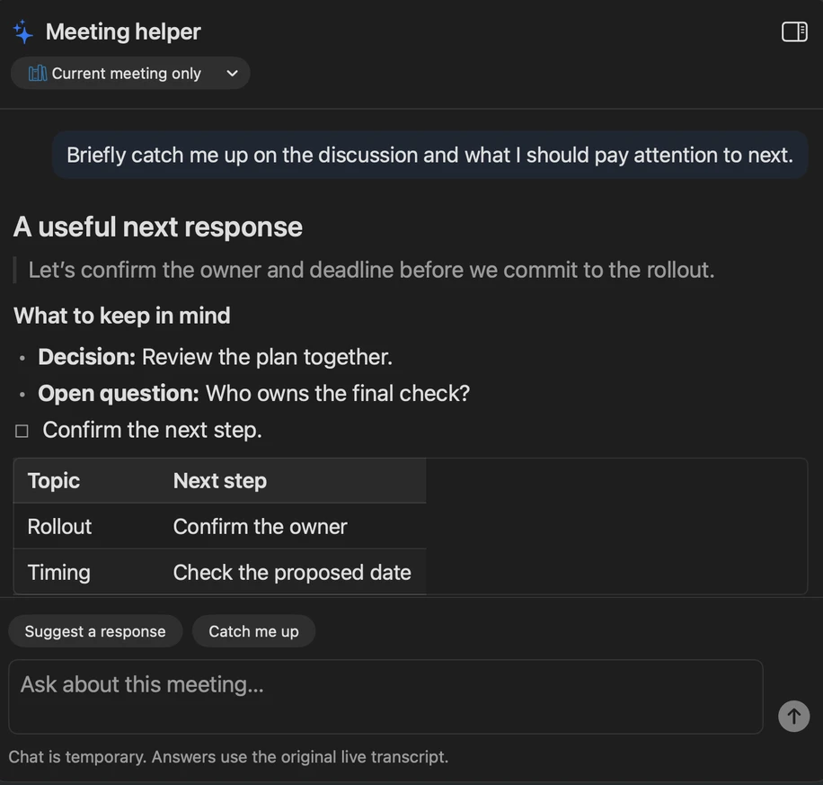
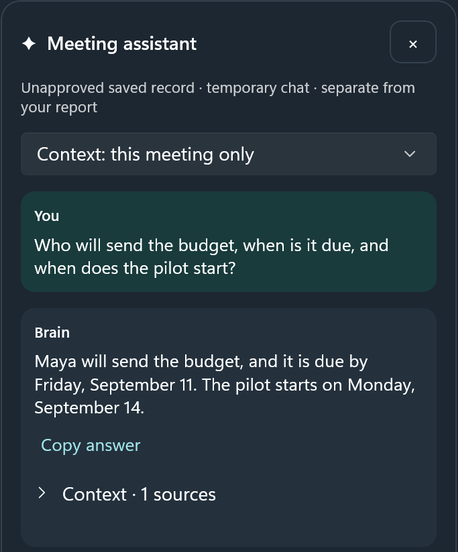
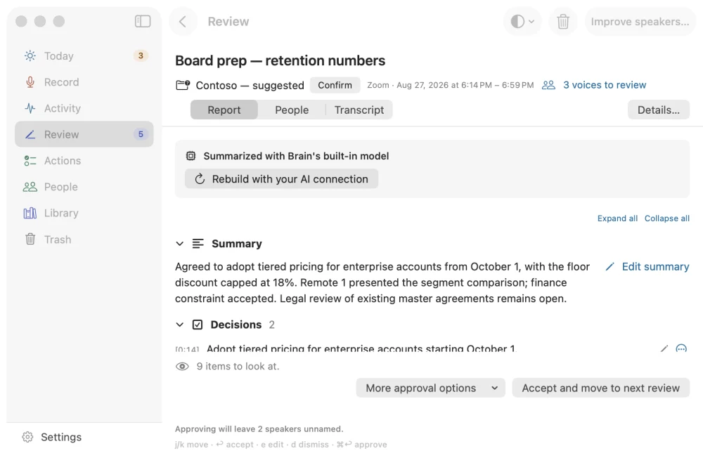
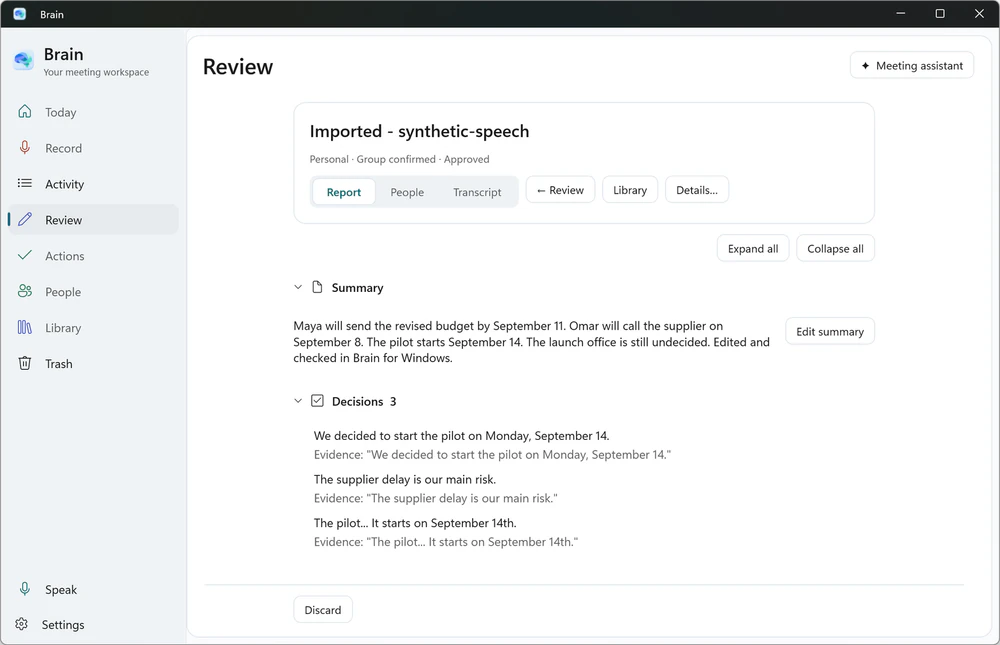

Record the conversation.
Keep the useful details.
A place for your meetings, notes, and next steps.
Brain helps you find what was said and what comes next.
Version 0.2.53 · Brain-0.2.53.dmg · 82 MB
macOS 26 (Tahoe) or later · Apple silicon Mac
SHA-256 f2caad34035fb69591f6b5b96051640ec652c9c1528aab602d1ed4b050595b32
Downloads for the Windows preview are being prepared.
Windows 11 · Intel or AMD 64-bit PC



The meeting ends.
Your notes are just getting useful.
Record a conversation or bring in an audio file. Read the transcript, review the summary, and keep the decisions and next steps together.
{kind=link}
{kind=link}
{kind=link}
Ask the question
you came back for.
Who’s sending the budget? When did we agree to start? Ask the meeting helper while the call is still goingassistant while you’re talking, or when you return to a saved meeting.
Read the answer beside your notes, and check the source before you rely on it.
Shown here: a catch-up during a call, with the decision, the open question, and the next steps.Shown here: a question about the budget owner and the pilot’s start date.
{kind=link}

{kind=link}

Leave with something
you can use.
Review and edit the summary in your own words. Keep the next steps you agree with, then find the conversation again in your library.


Your meetings.
On your MacPC.
Brain stores your recordings and notes in your MacWindows account. Speech, summaries, and meeting questions can run on your MacPC after the tools are downloaded.
You choose whether to connect an online service. If you do, that service may receive meeting text and questions.
Read how Brain handles your informationStart with a small conversation.
Brain is an early preview, shared by Sami Shariff. Begin with a practice meeting and keep a backup of anything important.